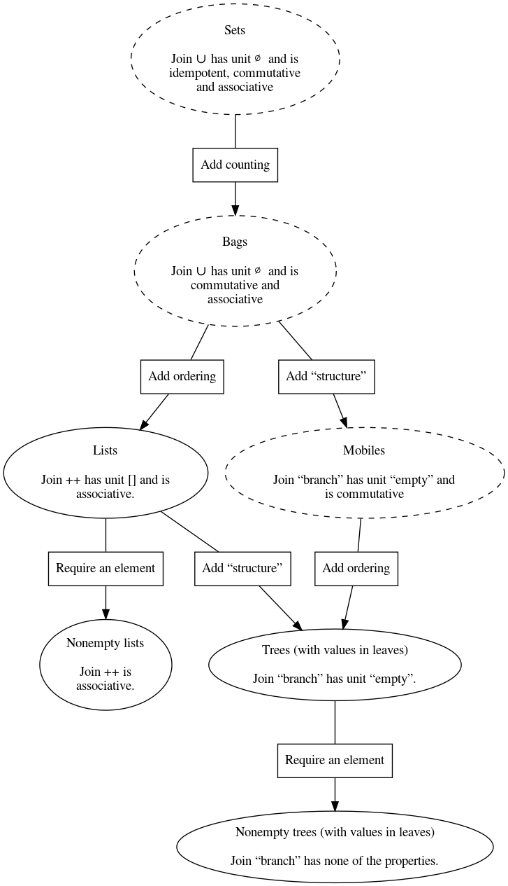

The Boom hierarchy in Scala
Table of Contents
1 Introduction
These notes were created for, and in some parts during, the lecture on September 14th and the following tutorials.
:TODO: There are still some parts without commentary or with incomplete examples. They will be fixed, and another announcement made when this file is complete.
2 The (extended) Boom hierarchy theory
2.1 Introduction
We begin with some (relatively brief) theory.
The Boom hierarchy was introduced by Lambert Meertens in Algorithmics — Towards programming as a mathematical activity; Meertens attributes the concept to H. J. Boom, hence the name.
The Boom hierachy is a family of data structures
—namely trees, lists, bags and sets—
for which we have an empty value and can construct singleton values,
and which include a join operation
(for sets and bags also called union, written ∪,
and for lists also called append, ++).
:TODO: Notation:
[]for empty,[a]for a singleton containinga,++for append.
The basic idea of the hierarchy is that
- sets have a
joinoperation which- has an identity
A ∪ ∅ = A, - is idempotent
A ∪ A = A, - is commutative
A ∪ B = B ∪ A, and - is associative
A ∪ (B ∪ C) = (A ∪ B) ∪ C. Then,
- has an identity
- bags are like sets, except the
joinoperation is not idempotent, - lists are like bags, except the
joinoperation is not commutative, and - trees are like lists, except the
joinoperation is not associative.
The paper is interested in laws satisfied by the
higher-order functions reduce (often called fold),
map and filter over those structures.
2.2 Extending the Boom hierarchy
Alexander Bunkenburg's later paper
“The Boom Hierarchy”
investigates this area further, by considering
what data structures can be obtained by taking different combinations
of the above listed features of the join operation.
The abstract of that paper reads
“The Boom Hierarchy is the family of data structures tree, list, bag, set. By combining their properties in other ways, more data structures can be made, like mobiles. The paper defines the data structures of this extended Boom Hierarchy and shows how the functions reduce, map, and filter are applied to them.”
For instance, through this process we arrive at
- the
nonempty listdata structure ornonempty treedata structure, which lack an identity. - the
mobiledata structure, which are like trees except that they “can spin” (the branching order is arbitrary).
2.3 Visualising the Boom hierarchy
We can visualise the layout of some of these structures:

Not all of these types are easily representable in most programming languages; we can say they are abstract types instead of concrete types. I've highlighted the ones which are not in the diagram using dashed lines.
Exercise: Why are those types not easily represented in standard programming languages?
Exercise: Is it impossible for those types to be easily represented in a programming language?
3 The Boom hierarchy in Scala application
Heads up: this section consists of failed attempts and subsequent corrections. Read carefully, and double check before borrowing any code. Or skip to the next section.
3.1 The AppendList type
Let us implement the list type as described in the Boom hierarchy paper
in Scala. We'll call these AppendList, as they take Append as
the basic operation.
Extra heads up: there's a big flaw in defining lists this way, so even when we get it right we're wrong. We'll discuss the problem at the end.
Those lists have three cases;
- the
Emptylist, - the
Single-ton lists, and - the
Concat-enation of two lists.
The Scala convention for implementing such types has us start with a super-type from which a type for each case will be derived. This super-type should not be instatiable, because we want to restrict to a number of cases :TODO:.
A trait is similar to a class, except it cannot be instantiated.
It is similar to an interface in Java.
(This also makes it similar to an abstract class,
except it's more flexible; see
the Scala docs.)
trait AppendList[A]
3.2 Attempt 1 at defining cases of lists: basic classes
Now we need to add sub-types which are instantiable.
Then since every element of the sub-type is also an element
of the super-type, we can create elements of List.
As Scala is object oriented, this means we want a class definition for each case.
We can jump right to it.
class Empty[A]() extends AppendList[A] class Single[A](a: A) extends AppendList[A] class Concat[A](l: AppendList[A], r: AppendList[A]) extends AppendList[A]
But if we try out this definition, we may be disappointed.
val empty1 = new Empty[Int] val empty2 = new Empty[Int] val list1 = new Concat(new Single(1), new Single(2)) empty1 == empty2 // equality check empty1.eq(empty2) // reference equality check
3.3 Attempt 2 at defining cases of lists: case classes
The reason why our classes above allowed multiple instances
of “the same” list is because, although we are not including any,
a regular class may have mutable data (non-constant fields).
So the runtime is aware that empty1 and empty2 could
actually be different (even though, with just our definitions above,
there isn't a way to make them significantly different).
When defining this sort of algebraic datatype in a functional style, we want immutability, to ensure that two objects which are constructed the same way are in fact the same.
Scala provides case classes for this.
A case class has no mutable state (no non-constant fields),
and all its fields are public.
case class Empty[A]() extends AppendList[A] case class Single[A](a: A) extends AppendList[A] case class Concat[A](l: AppendList[A], r: AppendList[A]) extends AppendList[A]
The name case class is used because,
given this immutable nature,
pattern matching (or case splitting)
makes sense.
3.4 The inherent problem with AppendList
:TODO: discuss sealed
:TODO: no junk, no confusion
sealed trait AppendList[A] case class Empty[A]() extends AppendList[A] case class Single[A](a: A) extends AppendList[A] case class Concat[A](l: AppendList[A], r: AppendList[A]) extends AppendList[A] val x1 = Empty[Int]() val x2 = Empty[Int]()
val listofone = Single(1) val anotherlistofone = Concat(listofone, Empty()) listofone == anotherlistofone
4 A proper implementation of lists in Scala.
type List a = Empty | Cons a (List a)
Our final, correct implementation
- ensures there is only one way to construct a given (abstract) list, by using more concrete constructors,
- marks the
traitassealed, so no further constuctors may be added, and
sealed trait ConsList[A] case class Empty[A]() extends ConsList[A] case class Cons[A](hd: A, tl: ConsList[A]) extends ConsList[A]
We can try out some definitions on this type.
def sum(xs: ConsList[Int]): Int = xs match { case Empty() => 0 case Cons(hd, tl) => hd + sum(tl) } def append[A](xs: ConsList[A], ys: ConsList[A]): ConsList[A] = xs match { case Empty() => ys case Cons(hd, tl) => Cons(hd, append(tl, ys)) }
val test = Cons(1,Cons(2,Cons(3,Empty()))) val test2 = Cons(1,Cons(2,Cons(3,Empty()))) append(test,test2)
5 Reset the REPL!
A nice feature of the Ammonite REPL for Scala is that you can save and load the session state, allowing you to more safely try things out and then restore to an earlier state if you need to. See https://ammonite.io/#Save/LoadSession
To save, run
repl.sess.save()
To load, run
repl.sess.load()
Note you can provide strings as arguments to name the states being saved/loaded.
If you don't use names, and need to restore an older state,
you can use repl.sess.pop(n) to pop n saved states off the session.
If you simply want to restart, just off an extreme number of saved states.
repl.sess.pop(999)
6 Scratch
case class test() { var x = 1 def hello() = 1 }